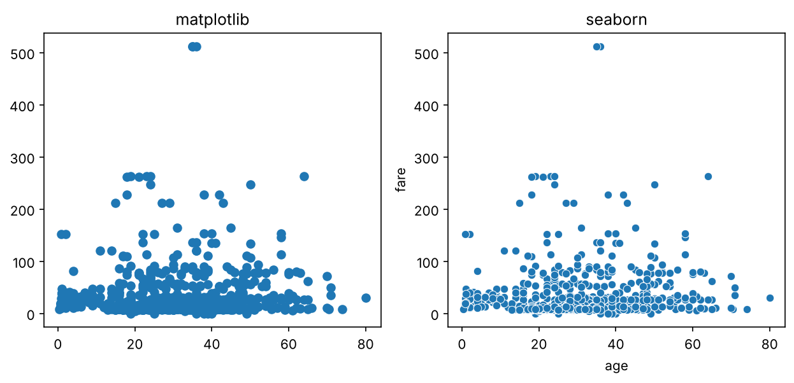
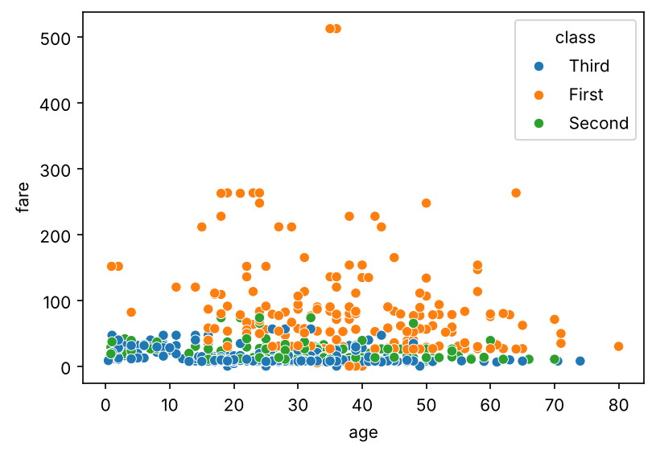
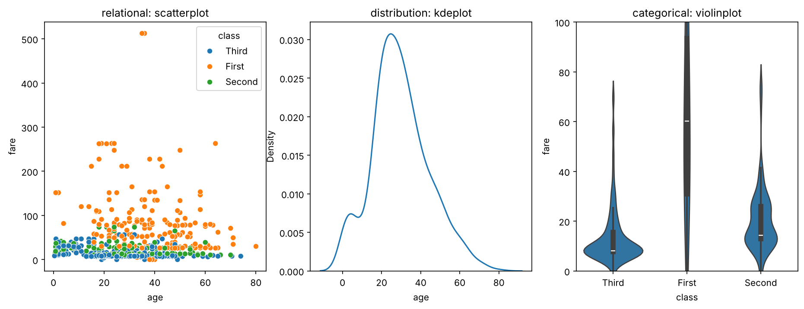
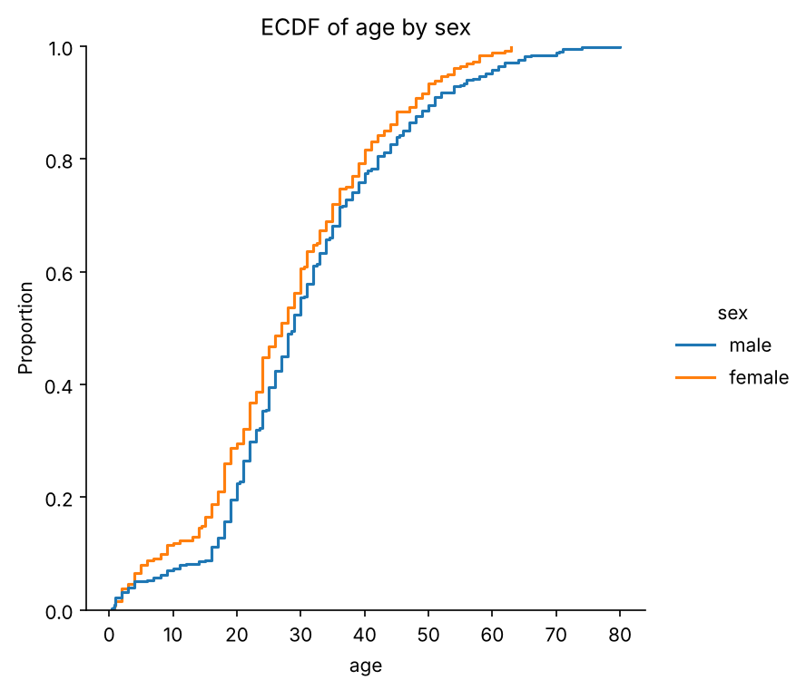
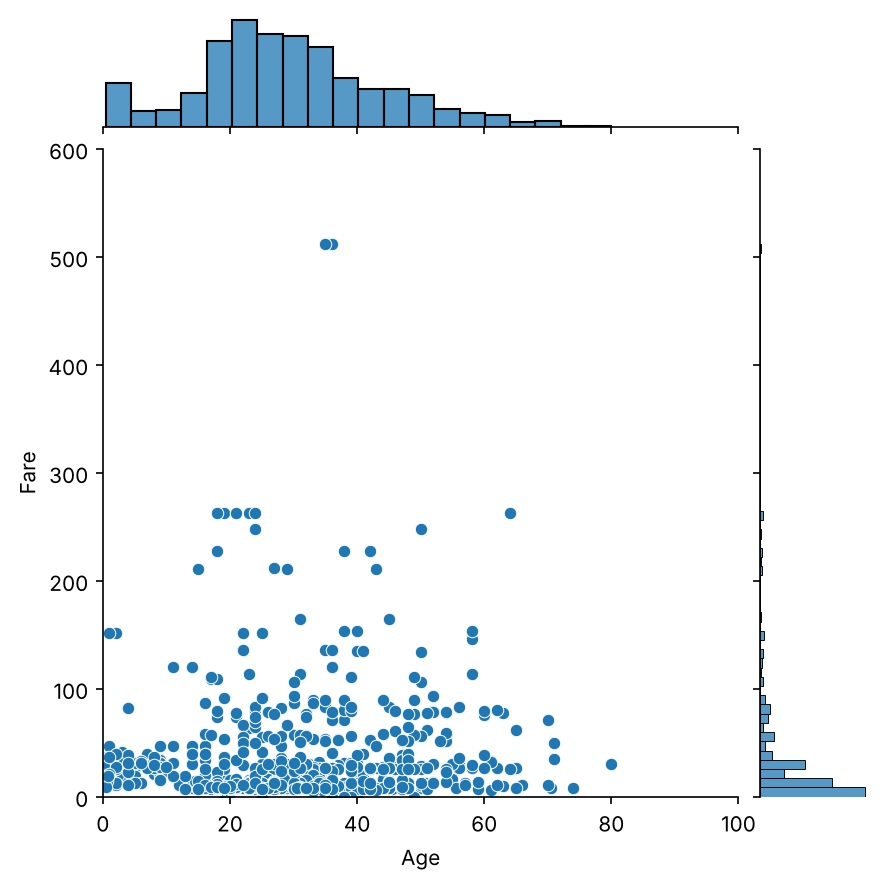
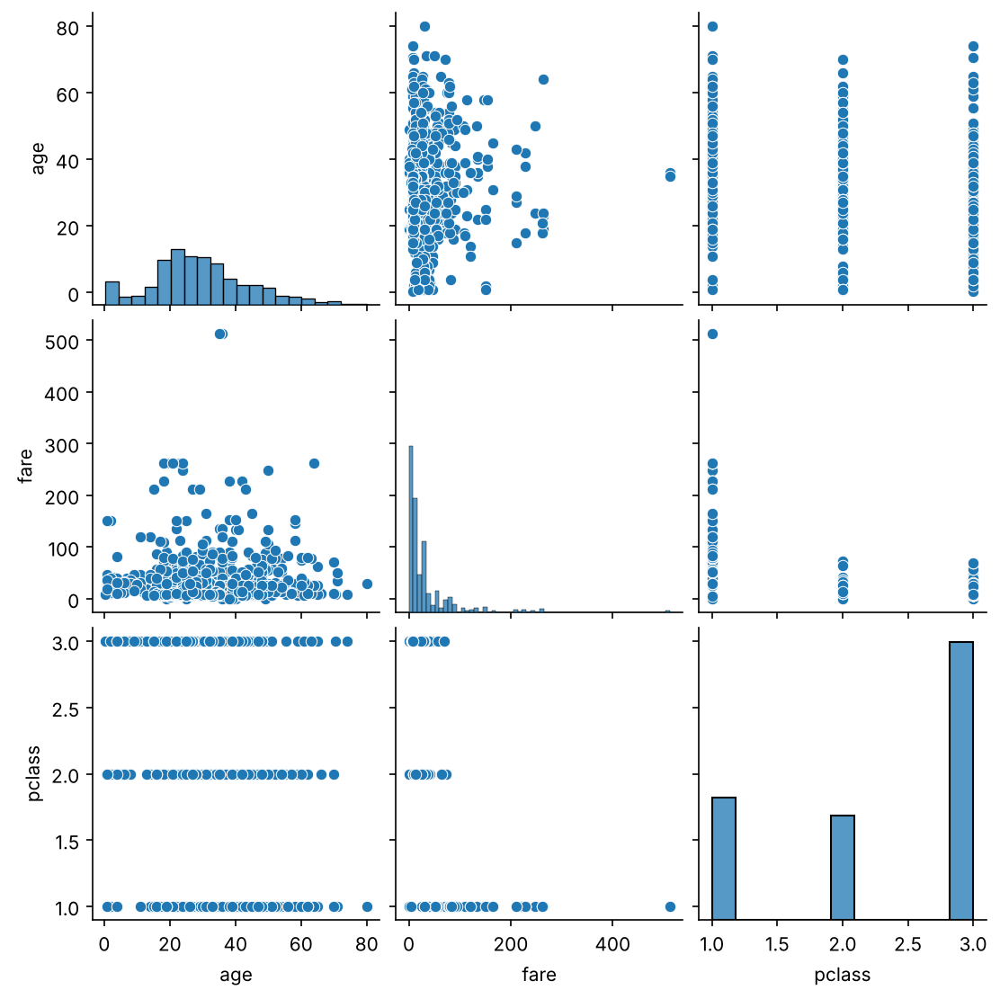

2.6 Pandas와 Seaborn
2장 데이터 탐색: 기술 통계와 시각화 · 표를 다루고, 표로 그리기
들어가며
지난 글 끝에서, 넘파이와 맷플롯립은 데이터 생태계의 바탕이지만 실무에서 직접 쓰는 일은 생각보다 적다고 했습니다. 이번 글에서는 데이터 사이언티스트라면 누구나 쓰는 두 라이브러리, 표 형태의 데이터를 다루는 판다스(Pandas)와 그 표를 손쉽게 그림으로 바꿔 주는 시본(Seaborn)을 살펴보겠습니다. 이 글은 2.4의 넘파이와 2.5의 맷플롯립을 안다는 전제에서 출발합니다.
판다스: 표를 다루는 도구
왜 넘파이만으로는 부족할까요?
판다스가 다루는 것은 관계형 데이터(relational data), 쉽게 말해 표입니다. 예를 들어 다음과 같은 표를 생각해 보겠습니다.
| 이름 | 출생연도 | 좋아하는 숫자 | |
|---|---|---|---|
| 학생 1 | 김찬호 | 1994 | 2400 |
| 학생 2 | 박종우 | 1993 | 1557 |
한 행에 담긴 (김찬호, 1994, 2400)은 종류가 서로 다른 값들이지만, 모두 “학생 1”이라는 한 대상에 대한 정보라는 공통점이 있습니다. 이렇게 한 행이 하나의 대상을 이루고, 각 열이 그 대상의 속성을 나타내는 데이터를 관계형 데이터라고 부릅니다. 이름은 수학의 관계(relation)라는 개념에서 왔습니다. 엑셀 파일(.xlsx), CSV 파일(.csv), TSV 파일(.tsv), 파케이 파일(.parquet) 등이 모두 이런 표를 담는 파일 형식입니다.
그럼 그냥 넘파이의 2차원 배열을 쓰면 되지 않을까요? 아쉽게도 그럴 수 없습니다. 2.4에서 보았듯이 넘파이 배열은 한 가지 종류의 값만 담을 수 있어서, “김찬호” 같은 문자열과 1994 같은 숫자를 한 배열에 함께 담을 수 없습니다. 실제 데이터는 대부분 이렇게 문자와 숫자가 섞여 있기 때문에, 넘파이를 바탕으로 하면서 이 한계를 보완한 라이브러리가 판다스입니다. 판다스는 보통 다음과 같이 불러옵니다.
import numpy as np
import pandas as pd판다스는 표를 다음과 같은 구조로 생각합니다. 각 행이 하나의 대상(위의 학생 한 명)이고, 각 열이 대상들의 한 가지 속성(이름, 출생연도 등)입니다. 그래서 어떤 대상의 정보가 필요하면 행에서, 어떤 속성의 정보가 필요하면 열에서 찾습니다.
시리즈
판다스에서 가장 단순한 구조는 시리즈(Series)입니다. 시리즈는 열이 하나뿐인 표라고 생각하면 됩니다. 값들과 함께, 각 값이 누구의 것인지를 나타내는 인덱스(index)를 붙여서 만듭니다.
names = ["김찬호", "박종우", "손인욱", "쥐앤장"]
years = [1994, 1993, 1994, 1995]
s = pd.Series(years, index=names)
print(s)
print()
print("김찬호의 출생연도:", s["김찬호"])김찬호 1994
박종우 1993
손인욱 1994
쥐앤장 1995
dtype: int64
김찬호의 출생연도: 1994인덱스로 값을 찾는 모습이 파이썬의 딕셔너리와 닮았지요. 실제로 시리즈는 딕셔너리로도 만들 수 있습니다. pd.Series({"김찬호": 1994, "박종우": 1993, ...})처럼 키를 인덱스로, 값을 값으로 넣으면 됩니다.
시리즈는 딕셔너리보다 훨씬 유연합니다. 인덱스가 문자열인데도 범위를 잘라 오는 슬라이싱(slicing)이 되고, 2.4에서 본 마스킹도 그대로 됩니다.
print(s["박종우":"손인욱"]) # 슬라이싱
print()
print(s[s >= 1994]) # 마스킹: 1994년 이후 출생만박종우 1993
손인욱 1994
dtype: int64
김찬호 1994
손인욱 1994
쥐앤장 1995
dtype: int64한 가지 주의할 점이 있습니다. 파이썬의 리스트나 넘파이 배열의 슬라이싱 a[1:3]은 끝 번호를 포함하지 않지만, 판다스에서 이름으로 하는 슬라이싱 s["박종우":"손인욱"]은 끝인 “손인욱”을 포함합니다.
데이터프레임
물론 실제로는 속성이 하나뿐인 표보다 여러 속성을 가진 표를 훨씬 많이 다룹니다. 판다스에서는 이런 표를 데이터프레임(DataFrame)이라고 부릅니다. 시리즈가 넘파이의 1차원 배열에 해당한다면 데이터프레임은 2차원 배열에 해당하고, 2차원 배열이 1차원 배열 여러 개로 이루어지듯 데이터프레임은 시리즈 여러 개를 나란히 붙인 것이라고 생각할 수 있습니다.
df = pd.DataFrame({"year": years,
"number": [2400, 1557, 7, 42]},
index=names)
print(df) year number
김찬호 1994 2400
박종우 1993 1557
손인욱 1994 7
쥐앤장 1995 42딕셔너리의 키가 열 이름이 되고, 값이 그 열의 내용이 됩니다. 행의 이름(인덱스)과 열의 이름은 각각 index와 columns 속성에 들어 있습니다.
print(df.index)
print(df.columns)Index(['김찬호', '박종우', '손인욱', '쥐앤장'], dtype='str')
Index(['year', 'number'], dtype='str')(판다스 버전에 따라 끝의 dtype='str'이 dtype='object'로 나올 수도 있습니다. 둘 다 문자열이 담겨 있다는 뜻입니다.)
열의 순서를 바꾸거나, 특정 행을 빼는 것도 간단합니다. 원하는 순서대로 열 이름을 리스트로 넣으면 그 순서로 열을 다시 고른 표가 나오고, drop()에 행 이름을 넣으면 그 행을 뺀 표가 나옵니다. 둘 다 원래의 df는 그대로 두고 새 표를 돌려준다는 점에 주의하세요. 결과를 계속 쓰려면 변수에 다시 담아야 합니다.
print(df[["number", "year"]]) # 열 순서 바꾸기
print()
print(df.drop("쥐앤장")) # 쥐앤장 행 빼기 number year
김찬호 2400 1994
박종우 1557 1993
손인욱 7 1994
쥐앤장 42 1995
year number
김찬호 1994 2400
박종우 1993 1557
손인욱 1994 7데이터프레임에서 값 꺼내기
데이터프레임에서 값을 꺼내는 방법은 시리즈와 조금 다릅니다. 대괄호 df[...]에 이름을 하나 넣으면, 판다스는 그것을 열 이름으로 받아들입니다. 그래서 행 이름을 넣으면 오류가 납니다.
print(df["김찬호"])KeyError: '김찬호'열 이름을 넣으면 그 열이 시리즈로 나옵니다. 여기에 다시 행 이름을 넣으면 하나의 값을 꺼낼 수 있습니다.
print(df["year"])
print()
print(df["year"]["김찬호"])김찬호 1994
박종우 1993
손인욱 1994
쥐앤장 1995
Name: year, dtype: int64
1994하지만 매번 열부터 고르는 것은 번거롭습니다. 우리는 “김찬호 학생의 정보 전체”처럼 행을 기준으로 데이터를 꺼내고 싶을 때가 많은데, 이때는 loc과 iloc을 씁니다.
loc: 행의 이름으로 찾습니다.iloc: 행의 위치 번호(0부터 시작)로 찾습니다. 이름의i는 정수(integer)를 뜻합니다.
print(df.loc["김찬호"]) # 이름으로 찾기
print()
print(df.iloc[1]) # 1번(두 번째) 행year 1994
number 2400
Name: 김찬호, dtype: int64
year 1993
number 1557
Name: 박종우, dtype: int64행 하나를 꺼내면 시리즈가 나오고, 슬라이싱으로 여러 행을 꺼내면 데이터프레임이 나옵니다. loc과 iloc에 쉼표로 열까지 함께 지정하면 칸 하나를 꺼낼 수도 있습니다.
print(df.loc["박종우":"손인욱"])
print()
print(df.loc["김찬호", "number"]) # 김찬호 행, number 열
print(df.iloc[0, 1]) # 0번 행, 1번 열 year number
박종우 1993 1557
손인욱 1994 7
2400
2400판다스의 마스킹
2.4에서 보았듯이 마스킹은 위치를 직접 적는 대신 조건으로 데이터를 골라내는 방법입니다. “1994년 이후 출생자만”, “한국인 환자의 데이터만”처럼 어떤 열의 값을 기준으로 행을 걸러 낼 때 씁니다.
마스킹은 두 단계로 이루어집니다. 먼저 조건을 써서 각 행이 조건을 만족하는지를 True/False로 담은 시리즈, 즉 마스크(mask)를 만듭니다. 그다음 그 마스크를 대괄호 안에 넣으면 True인 행만 골라집니다.
mask = df["year"] > 1994
print(mask)
print()
print(df[mask])김찬호 False
박종우 False
손인욱 False
쥐앤장 True
Name: year, dtype: bool
year number
쥐앤장 1995 421995년생인 쥐앤장만 True이고, 나머지는 False입니다. 마스크를 df.loc[mask]처럼 loc에 넣어도 결과는 같습니다.
조건을 여러 개 걸려면 마스크들을 &(그리고)나 |(또는)로 묶습니다. 이때 각 조건을 괄호로 감싸야 한다는 점에 주의하세요. 괄호가 없으면 연산 순서가 꼬여서 오류가 납니다.
print(df[(df["year"] >= 1994) & (df["number"] < 100)]) year number
손인욱 1994 7
쥐앤장 1995 42파일 불러오기
실제 데이터는 대부분 파일로 주어집니다. 판다스에서는 pd.read_csv()로 CSV 파일을 읽어 데이터프레임으로 만듭니다. 쉼표가 아닌 다른 기호로 열을 나눈 텍스트 파일도 sep 옵션으로 읽을 수 있는데, 예를 들어 sep=r"\s+"는 “공백이 하나 이상 있으면 거기서 나눈다”는 뜻입니다. 2.4에서 만든 것과 같은 텍스트 파일을 읽어 보겠습니다.
with open("data.txt", "w") as f:
f.write("1 3 5\n7 9 11\n13 15 17\n")
print(pd.read_csv("data.txt", sep=r"\s+", header=None)) 0 1 2
0 1 3 5
1 7 9 11
2 13 15 17header=None을 넣은 이유는, read_csv가 기본적으로 파일의 첫 줄을 열 이름으로 쓰기 때문입니다. 이 파일처럼 첫 줄부터 데이터인 경우에 header=None을 빼먹으면 첫 번째 행이 열 이름으로 들어가 데이터에서 사라져 버리니 조심해야 합니다.
read_csv는 인터넷 주소에서 파일을 바로 읽어 올 수도 있습니다. 시본을 만든 왁스컴(M. Waskom)이 공개해 둔 연습용 데이터 가운데, 1912년 타이타닉호 승객 891명의 정보를 담은 데이터를 불러와 보겠습니다.1
url = "https://raw.githubusercontent.com/mwaskom/seaborn-data/master/titanic.csv"
titanic = pd.read_csv(url)
print(titanic.shape)
print(titanic.columns.tolist())(891, 15)
['survived', 'pclass', 'sex', 'age', 'sibsp', 'parch', 'fare', 'embarked', 'class', 'who', 'adult_male', 'deck', 'embark_town', 'alive', 'alone']891행 15열의 표입니다. 각 행이 승객 한 명이고, 생존 여부(survived), 객실 등급(pclass, class), 성별(sex), 나이(age), 운임(fare) 같은 열이 있습니다. 데이터가 크면 전체를 출력하기 어려우니, 보통은 head()로 앞의 몇 행만 봅니다. (뒤의 몇 행은 tail()로 봅니다.) 여기서는 열이 많아서 몇 개만 골라 보겠습니다.
print(titanic[["survived", "pclass", "sex", "age", "fare", "class"]].head()) survived pclass sex age fare class
0 0 3 male 22.0 7.2500 Third
1 1 1 female 38.0 71.2833 First
2 1 3 female 26.0 7.9250 Third
3 1 1 female 35.0 53.1000 First
4 0 3 male 35.0 8.0500 Third그리고 판다스의 가장 강력한 기능 가운데 하나가 describe()입니다. 숫자로 된 열마다 2.2에서 다룬 요약 통계량을 한 번에 계산해 줍니다.
print(titanic[["age", "fare"]].describe().round(2)) age fare
count 714.00 891.00
mean 29.70 32.20
std 14.53 49.69
min 0.42 0.00
25% 20.12 7.91
50% 28.00 14.45
75% 38.00 31.00
max 80.00 512.33count는 값이 있는 행의 개수, mean은 평균, std는 표준편차, min과 max는 최솟값과 최댓값, 25%, 50%, 75%는 사분위수입니다. 넘파이로 하나하나 계산하던 것이 한 줄로 끝납니다. 몇 가지 눈여겨볼 점도 바로 보입니다.
- 나이(
age)의count가 891이 아니라 714입니다. 177명의 나이가 빠져 있다는 뜻입니다. - 운임(
fare)은 평균(32.20)이 중앙값(14.45)보다 두 배 넘게 크고, 최댓값이 512.33입니다. 2.2의 소득처럼 오른쪽으로 크게 치우친 분포일 가능성이 높습니다. - 2.2에서 말했듯이 판다스의
std는 넘파이와 달리 \(n-1\)로 나눈 값입니다.
이렇게 describe() 한 번으로 데이터 탐색의 첫걸음을 뗄 수 있습니다. 그다음은 그림으로 확인할 차례입니다.
시본: 표를 바로 그림으로
시본(Seaborn)은 맷플롯립을 바탕으로 만든 시각화 라이브러리입니다. 가장 큰 장점은 판다스의 데이터프레임을 받아서, 열 이름만 지정하면 그림을 그려 준다는 것입니다. 맷플롯립으로 그리려면 꽤 번거로운 통계적인 그림도 한두 줄로 그릴 수 있습니다. 보통 다음과 같이 불러옵니다.
import matplotlib.pyplot as plt
import seaborn as sns산점도로 시작하기
타이타닉 데이터에서 나이와 운임의 산점도를 맷플롯립과 시본으로 각각 그려서 비교해 보겠습니다.
fig, ax = plt.subplots(1, 2, figsize=(10, 4))
ax[0].scatter(titanic["age"], titanic["fare"])
ax[0].set_title("matplotlib")
sns.scatterplot(data=titanic, x="age", y="fare", ax=ax[1])
ax[1].set_title("seaborn")
시본은 data에 데이터프레임을, x와 y에 열 이름을 넣기만 하면 됩니다. 축 이름도 열 이름으로 자동으로 붙여 주고, 점마다 테두리를 그려 겹친 점도 더 잘 구분됩니다. ax=ax[1]은 이 그림을 어느 Axes에 그릴지 정해 준 것으로, 2.5에서 본 맷플롯립의 구조를 그대로 쓴다는 것을 알 수 있습니다.
여기에 세 번째 열을 색으로 더할 수도 있습니다. hue 옵션에 열 이름을 넣으면, 그 열의 값에 따라 점의 색을 바꾸고 범례까지 달아 줍니다.
fig, ax = plt.subplots(figsize=(6, 4))
sns.scatterplot(data=titanic, x="age", y="fare", hue="class", ax=ax)
한 줄을 더했을 뿐인데, 운임이 높은 승객은 거의 다 1등석이라는 사실이 한눈에 보입니다.
시본의 세 가지 그래프 가족
시본의 그래프는 크게 세 가족으로 나뉩니다.
- 관계형 그래프: 두 변수의 관계를 보여 줍니다. 위의 산점도
sns.scatterplot()과, 맷플롯립의plot()을 강화한 선 그래프sns.lineplot()이 여기에 속합니다. - 분포형 그래프: 한 변수의 값들이 어떻게 분포되어 있는지 보여 줍니다. 히스토그램
sns.histplot(), 히스토그램의 막대 끝을 매끄러운 곡선으로 이은 것 같은 커널 밀도 추정 그래프sns.kdeplot(), 각 값 이하인 데이터의 비율을 그린 경험적 누적분포함수 그래프sns.ecdfplot(), 데이터가 있는 위치마다 바닥에 짧은 선을 깔아 주는sns.rugplot()등이 있습니다. - 범주형 그래프: 범주별로 값이 어떻게 다른지 보여 줍니다. 막대그래프
sns.barplot(), 박스 플롯sns.boxplot(), 박스 플롯에 분포의 모양까지 더한 바이올린 플롯sns.violinplot()등이 있습니다.
세 가족에서 하나씩 골라 나란히 그려 보겠습니다.
fig, axes = plt.subplots(1, 3, figsize=(15, 5))
sns.scatterplot(data=titanic, x="age", y="fare", hue="class", ax=axes[0])
axes[0].set_title("relational: scatterplot")
sns.kdeplot(data=titanic, x="age", ax=axes[1])
axes[1].set_title("distribution: kdeplot")
sns.violinplot(data=titanic, x="class", y="fare", ax=axes[2])
axes[2].set_title("categorical: violinplot")
axes[2].set_ylim(0, 100)
가운데 그림에서는 승객의 나이가 20대 중반에 가장 많이 몰려 있고, 어린아이들도 꽤 있었다는 것을 알 수 있습니다. 오른쪽 바이올린 플롯은 등급별 운임의 분포를 바이올린 모양으로 보여 주는데, 폭이 넓을수록 그 운임대의 승객이 많다는 뜻입니다. 2·3등석은 낮은 운임에 몰려 있는 반면 1등석은 운임이 훨씬 넓게 퍼져 있습니다. (운임이 아주 높은 1등석 승객이 있어서, 세로축을 100까지만 보이도록 잘랐습니다.)
Axes 단위 그래프와 Figure 단위 그래프
지금까지 쓴 시본의 함수들은 모두 ax=...로 어느 Axes에 그릴지 직접 정해 주었습니다. 이런 함수들을 Axes 단위(axes-level) 그래프라고 합니다. 우리가 원하는 칸에 원하는 그림을 배치할 수 있다는 자유가 있습니다.
반대로 그런 자유를 조금 포기하는 대신 Figure와 Axes까지 알아서 다 만들어 주는 함수들도 있는데, 이를 Figure 단위(figure-level) 그래프라고 합니다. 위의 세 가족마다 하나씩 있어서, 관계형은 sns.relplot(), 분포형은 sns.displot(), 범주형은 sns.catplot()입니다. 이 함수들은 가족 안에서 기본으로 정해진 그래프를 그리고, kind 옵션으로 종류를 바꿀 수 있습니다. 예를 들어 displot()의 기본값은 히스토그램이고, kind="ecdf"로 바꾸면 경험적 누적분포함수를 그립니다.
g = sns.displot(data=titanic, x="age", hue="sex", kind="ecdf")
g.ax.set_title("ECDF of age by sex")
Figure 단위 함수는 fig, ax = plt.subplots() 같은 준비 없이 바로 그림을 그려 주는 대신, 그림이 담긴 시본의 특별한 객체를 돌려줍니다. 위에서는 이것을 g라는 이름으로 받아 두었습니다. 이 객체의 자세한 구조까지 알 필요는 없고, 그 안에 g.figure라는 이름으로 Figure가(예전 버전에서는 g.fig), g.ax라는 이름으로 Axes가 들어 있다는 것만 알면 됩니다. (Axes가 여러 개라면 g.axes에 배열로 들어 있습니다.) 그래서 g.ax.set_title()처럼 맷플롯립에서 하던 대로 그림을 손볼 수 있습니다.
이 그림에서는 여성 승객의 곡선이 대부분의 구간에서 조금 위에 있습니다. 같은 나이까지 이미 더 많은 비율이 채워졌다는 뜻이니, 여성 승객이 평균적으로 조금 더 젊었다는 것을 알 수 있습니다.
Figure 단위 함수의 진가는 그림 여러 개를 한꺼번에 엮어 줄 때 드러납니다. 대표적인 것이 sns.jointplot()입니다.
g = sns.jointplot(data=titanic, x="age", y="fare", xlim=(0, 100), ylim=(0, 600))
g.set_axis_labels("Age", "Fare")
가운데에는 두 변수의 산점도를, 위쪽에는 가로축 변수(나이)의 분포를, 오른쪽에는 세로축 변수(운임)의 분포를 함께 그려 줍니다. 두 변수의 관계와 각 변수의 분포를 한 장에서 볼 수 있는 것이지요. 오른쪽 히스토그램을 보면, describe()에서 짐작했던 대로 운임이 오른쪽(여기서는 위쪽)으로 크게 치우친 분포라는 것이 확인됩니다.
여러 변수를 한꺼번에 살펴볼 때는 sns.pairplot()이 유용합니다. 넣어 준 열들을 두 개씩 짝지어 가능한 모든 산점도를 그리고, 대각선 칸에는 각 열의 분포를 그려 줍니다.
g = sns.pairplot(titanic[["age", "fare", "pclass"]])
sns.pairplot(titanic)처럼 데이터프레임 전체를 넣으면, 숫자로 된 모든 열의 모든 짝을 한 번에 그려 줍니다. 처음 보는 데이터의 전체 모습을 빠르게 훑어볼 때 아주 편리합니다. 다만 열이 많으면 그림이 매우 커지고 그리는 데도 시간이 오래 걸리니, 관심 있는 열만 골라서 쓰는 것이 좋습니다.
정리
- 판다스는 문자와 숫자가 섞인 표를 다루는 라이브러리로, 열이 하나인 시리즈와 여러 열로 이루어진 데이터프레임을 제공합니다.
df["열"]은 열을,df.loc["행 이름"]과df.iloc[행 번호]는 행을 꺼냅니다. 조건으로 행을 고를 때는 마스킹을 쓰고, 조건이 여러 개면 괄호와&,|로 묶습니다.pd.read_csv()로 파일을 읽고,head()와describe()로 데이터를 빠르게 훑어볼 수 있습니다.describe()만으로도 결측치와 치우친 분포 같은 단서를 찾을 수 있습니다.- 시본은 데이터프레임의 열 이름만으로 그림을 그려 주며, 관계형, 분포형, 범주형의 세 가족과 Axes 단위·Figure 단위 함수로 나뉩니다.
2장에서는 데이터를 숫자로 요약하는 기술 통계와 그림으로 요약하는 시각화, 그리고 그것을 파이썬으로 해내는 도구들을 살펴보았습니다. 다음 장에서는 이런 작업을 할 때 코드를 어떻게 써야 남이 이해하고 다시 실행할 수 있는지, 즉 재현 가능한 작업 환경에 대한 이야기로 넘어가겠습니다.
연결되는 개념
- \(\leftarrow\) 이전 개념: 2.5 Matplotlib으로 그리기
- \(\rightarrow\) 다음 개념: 추후 작성 예정
Footnotes
M. L. Waskom, “seaborn: statistical data visualization”, Journal of Open Source Software 6(60), 2021, 3021. 연습용 데이터는 시본의
sns.load_dataset("titanic")으로도 불러올 수 있습니다.↩︎